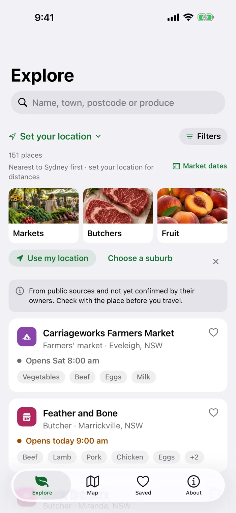

An Australian field guide
Good food.Closer to home.
Find farmers’ markets, farm gates and independent butchers across Australia.
Explore the field guide
Scroll to explore
At the farm gate
The field guide
Find your next stop.
Farm Direct for iPhone
Take the
scenic route.
Turn a market morning into a weekend food trip. Find a place, check its details and save the stops you want to visit.
Get the free iPhone app
For producers & market organisers
Have a place
we should know?
Farm Direct is an independent Australian directory run by Phoenix Jennings. Listings draw on public sources. Market organisers, farm shops and butchers can suggest a place for free or send us a correction.
Get in touchFounding business offer
The A$500 founding offer includes listing setup or updates and a verification mark after Phoenix matches your ABN and confirms the details with you. You’ll agree on publication timing before payment.
Request a 10-minute demo